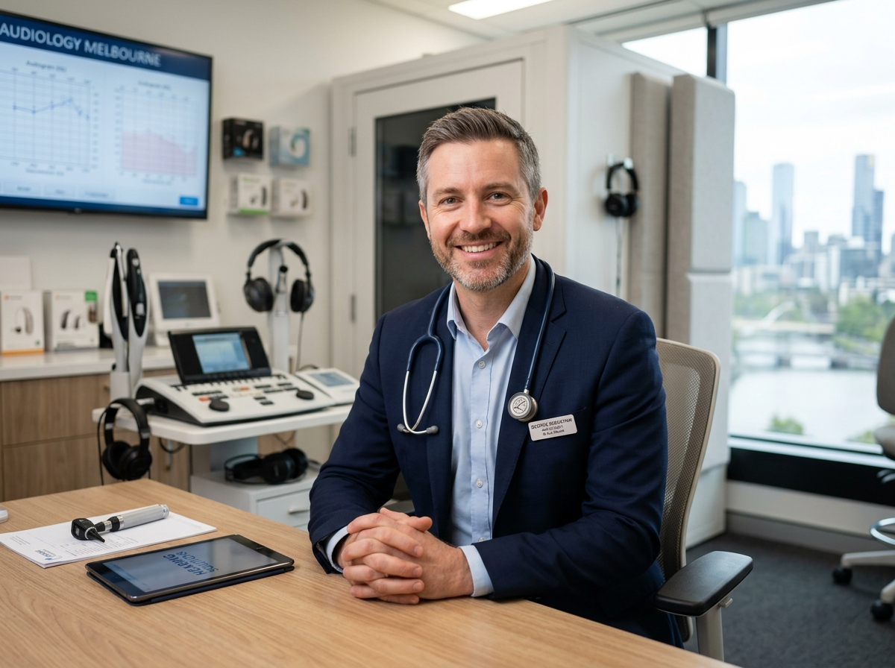

Meet George Sebastian & The Prime Audiology Philosophy
Founded upon clinical integrity, unhurried consultations, and freedom from manufacturer sales quotas.

Dedicated to Meaningful Communication Outcomes
George Sebastian holds a Master of Clinical Audiology and has served the Victorian community for over a decade. Throughout his clinical career, George observed that large corporate hearing retail chains frequently prioritized sales quotas over patient wellbeing.
In response, George established Prime Audiology: an authentic, 100% independent private practice dedicated to providing Melbourne seniors and their families with transparent clinical guidance, comprehensive diagnostic assessments, and compassionate follow-up care.
"Hearing loss doesn’t just affect the ears—it impacts how we connect with our children, grandchildren, and friends. Our responsibility as clinicians is to restore that connection with patience, accuracy, and kindness."
Clinical Qualifications & Accreditations:
- Master of Clinical Audiology (Australian University)
- Full Member & Certified Clinical Practitioner (MAudA CCP) with Audiology Australia
- Accredited Commonwealth Hearing Services Program (HSP) Provider
- Department of Veterans' Affairs (DVA) Registered Clinician
Why Choosing an Independent Audiologist Matters
Most Australian hearing clinics are owned by hearing aid manufacturers. Discover why being independent changes everything for your care.
Freedom of Choice
We dispense and service hearing aids from all world-leading brands: Phonak, Starkey, Oticon, Bernafon, Widex, ReSound, Signia, and Unitron. Your device is chosen because it fits your acoustic needs—not because of corporate quotas.
Unhurried Consultations
We allocate generous appointment slots so you never feel pressured or rushed. You will always see George Sebastian directly, ensuring continuity of care at every follow-up visit.
Real-Ear Verification (REM)
We measure sound directly inside your ear canal using micro-probe microphones, guaranteeing that sound matches your diagnostic prescription precisely for maximum comfort and clarity.
A Welcoming Clinic Designed for Senior Accessibility
Our Melbourne clinic is fully accessible with step-free street level entry, dedicated patient parking, and a comfortable, quiet consultation environment designed to minimize anxiety.
Cannot Travel to Clinic?
George Sebastian provides a dedicated Home Visit Audiology Service across metropolitan Melbourne. We bring calibrated portable testing equipment directly to your private home or aged care facility, allowing comprehensive assessments and hearing aid adjustments in your natural living environment.